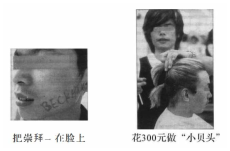

第 1 题 #
1.A. IndeedB. LikewiseC. ThereforeD. Furthermore
考研英语 · questions · 2006
题号和章节目录由结构化数据生成。选项按卷面字母顺序显示；原标记保留在 JSON 中。
2006 年全国硕士研究生招生考试英语试题
Read the following text. Choose the best word(s) for each numbered blank and mark A, B, C or D on ANSWER SHEET 1. (10 points)
The homeless make up a growing percentage of America’s population. 1 , homelessness has reached such proportions that local governments can’t possibly 2 . To help homeless people 3 independence, the federal government must support job training programs, 4 the minimum wage, and fund more low-cost housing.
5 everyone agrees on the number of Americans who are homeless. Estimates 6 anywhere from 600,000 to 3 million. 7 the figure may vary, analysts do agree on another matter: that the number of the homeless is 8 . One of the federal government’s studies 9 that the number of the homeless will reach nearly 19 million by the end of this decade.
Finding ways to 10 this growing homeless population has become increasingly difficult. 11 when homeless individuals manage to find a 12 that will give them three meals a day and a place to sleep at night, a good number still spend the bulk of each day 13 the street. Part of the problem is that many homeless adults are addicted to alcohol or drugs. And a significant number of the homeless have serious mental disorders. Many others, 14 not addicted or mentally ill, simply lack the everyday 15 skills needed to turn their lives 16 . Boston Globe reporter Chris Reidy notes that the situation will improve only when there are 17 programs that address the many needs of the homeless. 18 Edward Zlotkowski, director of community service at Bentley College in Massachusetts, 19 it, “There has to be 20 of programs. What’s needed is a package deal.”
Read the following four texts. Answer the questions below each text by choosing A, B, C or D. Mark your answers on ANSWER SHEET 1. (40 points)
In spite of “endless talk of difference,” American society is an amazing machine for homogenizing people. There is “the democratizing uniformity of dress and discourse, and the casualness and absence of deference” characteristic of popular culture. People are absorbed into “a culture of consumption” launched by the 19th-century department stores that offered “vast arrays of goods in an elegant atmosphere. Instead of intimate shops catering to a knowledgeable elite,” these were stores “anyone could enter, regardless of class or background. This turned shopping into a public and democratic act.” The mass media, advertising and sports are other forces for homogenization.
Immigrants are quickly fitting into this common culture, which may not be altogether elevating but is hardly poisonous. Writing for the National Immigration Forum, Gregory Rodriguez reports that today’s immigration is neither at unprecedented levels nor resistant to assimilation. In 1998 immigrants were 9.8 percent of the population; in 1900, 13.6 percent. In the 10 years prior to 1990, 3.1 immigrants arrived for every 1,000 residents; in the 10 years prior to 1890, 9.2 for every 1,000. Now, consider three indices of assimilation — language, home ownership and intermarriage.
The 1990 Census revealed that “a majority of immigrants from each of the fifteen most common countries of origin spoke English ‘well’ or ‘very well’ after ten years of residence.” The children of immigrants tend to be bilingual and proficient in English. “By the third generation, the original language is lost in the majority of immigrant families.” Hence the description of America as a “graveyard” for languages. By 1996 foreign-born immigrants who had arrived before 1970 had a home ownership rate of 75.6 percent, higher than the
69.8 percent rate among native-born Americans.
Foreign-born Asians and Hispanics “have higher rates of intermarriage than do U.S.-born whites and blacks.” By the third generation, one third of Hispanic women are married to non-Hispanics, and 41 percent of Asian-American women are married to non-Asians.
Rodriguez notes that children in remote villages around the world are fans of superstars like Arnold Schwarzenegger and Garth Brooks, yet “some Americans fear that immigrants living within the United States remain somehow immune to the nation’s assimilative power.”
Are there divisive issues and pockets of seething anger in America? Indeed. It is big enough to have a bit of everything. But particularly when viewed against America’s turbulent past, today’s social indices hardly suggest a dark and deteriorating social environment.
21. The word “homogenizing” (Paragraph 1) most probably means ____
22. According to the author, the department stores of the 19th century____
23. The text suggests that immigrants now in the U.S. ____
24. Why are Arnold Schwarzenegger and Garth Brooks mentioned in Paragraph 5?
25. In the author’s opinion, the absorption of immigrants into American society is ____
Stratford-on-Avon, as we all know, has only one industry — William Shakespeare — but there are two distinctly separate and increasingly hostile branches. There is the Royal Shakespeare Company (RSC), which presents superb productions of the plays at the Shakespeare Memorial Theatre on the Avon. And there are the townsfolk who largely live off the tourists who come, not to see the plays, but to look at Anne Hathaway’s Cottage, Shakespeare’s birthplace and the other sights.
The worthy residents of Stratford doubt that the theater adds a penny to their revenue. They frankly dislike the RSC’s actors, them with their long hair and beards and sandals and noisiness. It’s all deliciously ironic when you consider that Shakespeare, who earns their living, was himself an actor (with a beard) and did his share of noise-making.
The tourist streams are not entirely separate. The sightseers who come by bus — and often take in Warwick Castle and Blenheim Palace on the side — don’t usually see the plays, and some of them are even surprised to find a theatre in Stratford. However, the playgoers do manage a little sight-seeing along with their playgoing. It is the playgoers, the RSC contends, who bring in much of the town’s revenue because they spend the night (some of them four or five nights) pouring cash into the hotels and restaurants. The sightseers can take in everything and get out of town by nightfall.
The townsfolk don’t see it this way and the local council does not contribute directly to the subsidy of the Royal Shakespeare Company. Stratford cries poor traditionally. Nevertheless every hotel in town seems to be adding a new wing or cocktail lounge. Hilton is building its own hotel there, which you may be sure will be decorated with Hamlet Hamburger Bars, the Lear Lounge, the Banquo Banqueting Room, and so forth, and will be very expensive.
Anyway, the townsfolk can’t understand why the Royal Shakespeare Company needs a subsidy. (The theatre has broken attendance records for three years in a row. Last year its 1,431 seats were 94 per cent occupied all year long and this year they’ll do better.) The reason, of course, is that costs have rocketed and ticket prices have stayed low.
It would be a shame to raise prices too much because it would drive away the young people who are Stratford’s most attractive clientele. They come entirely for the plays, not the sights. They all seem to look alike (though they come from all over) — lean, pointed, dedicated faces, wearing jeans and sandals, eating their buns and bedding down for the night on the flagstones outside the theatre to buy the 20 seats and 80 standing-room tickets held for the sleepers and sold to them when the box office opens at 10:30 a.m.
26. From the first two paragraphs, we learn that ____
27. It can be inferred from Paragraph 3 that ____
28. By saying “Stratford cries poor traditionally” (Paragraph 4), the author implies that ____
29. According to the townsfolk, the RSC deserves no subsidy because ____
30. From the text we can conclude that the author ____
When prehistoric man arrived in new parts of the world, something strange happened to the large animals: they suddenly became extinct. Smaller species survived. The large, slow-growing animals were easy game, and were quickly hunted to extinction. Now something similar could be happening in the oceans.
That the seas are being overfished has been known for years. What researchers such as Ransom Myers and Boris Worm have shown is just how fast things are changing. They have looked at half a century of data from fisheries around the world. Their methods do not attempt to estimate the actual biomass (the amount of living biological matter) of fish species in particular parts of the ocean, but rather changes in that biomass over time. According to their latest paper published in Nature, the biomass of large predators (animals that kill and eat other animals) in a new fishery is reduced on average by 80% within 15 years of the start of exploitation. In some long-fished areas, it has halved again since then.
Dr. Worm acknowledges that these figures are conservative. One reason for this is that fishing technology has improved. Today’s vessels can find their prey using satellites and sonar, which were not available 50 years ago. That means a higher proportion of what is in the sea is being caught, so the real difference between present and past is likely to be worse than the one recorded by changes in catch sizes. In the early days, too, longlines would have been more saturated with fish. Some individuals would therefore not have been caught, since no baited hooks would have been available to trap them, leading to an underestimate of fish stocks in the past. Furthermore, in the early days of longline fishing, a lot of fish were lost to sharks after they had been hooked. That is no longer a problem, because there are fewer sharks around now.
Dr. Myers and Dr. Worm argue that their work gives a correct baseline, which future management efforts must take into account. They believe the data support an idea current among marine biologists, that of the “shifting baseline”. The notion is that people have failed to detect the massive changes which have happened in the ocean because they have been looking back only a relatively short time into the past. That matters because theory suggests that the maximum sustainable yield that can be cropped from a fishery comes when the biomass of a target species is about 50% of its original levels. Most fisheries are well below that, which is a bad way to do business.
31. The extinction of large prehistoric animals is noted to suggest that ____
32. We can infer from Dr. Myers and Dr. Worm’s paper that ____
33. By saying “these figures are conservative” (Paragraph 3), Dr. Worm means that ____
34. Dr. Myers and other researchers hold that ____
35. The author seems to be mainly concerned with most fisheries’ ____
Many things make people think artists are weird. But the weirdest may be this: artists’ only job is to explore emotions, and yet they choose to focus on the ones that feel bad.
This wasn’t always so. The earliest forms of art, like painting and music, are those best suited for expressing joy. But somewhere from the 19th century onward, more artists began seeing happiness as meaningless, phony or, worst of all, boring, as we went from Wordsworth’s daffodils to Baudelaire’s flowers of evil.
You could argue that art became more skeptical of happiness because modern times have seen so much misery. But it’s not as if earlier times didn’t know perpetual war, disaster and the massacre of innocents. The reason, in fact, may be just the opposite: there is too much damn happiness in the world today.
After all, what is the one modern form of expression almost completely dedicated to depicting happiness? Advertising. The rise of anti-happy art almost exactly tracks the emergence of mass media, and with it, a commercial culture in which happiness is not just an ideal but an ideology.
People in earlier eras were surrounded by reminders of misery. They worked until exhausted, lived with few protections and died young. In the West, before mass communication and literacy, the most powerful mass medium was the church, which reminded worshippers that their souls were in danger and that they would someday be meat for worms. Given all this, they did not exactly need their art to be a bummer too.
Today the messages the average Westerner is surrounded with are not religious but commercial, and forever happy. Fast-food eaters, news anchors, text messengers, all smiling, smiling, smiling. Our magazines feature beaming celebrities and happy families in perfect homes. And since these messages have an agenda — to lure us to open our wallets — they make the very idea of happiness seem unreliable. “Celebrate!” commanded the ads for the arthritis drug Celebrex, before we found out it could increase the risk of heart attacks.
But what we forget — what our economy depends on us forgetting — is that happiness is more than pleasure without pain. The things that bring the greatest joy carry the greatest potential for loss and disappointment. Today, surrounded by promises of easy happiness, we need art to tell us, as religion once did, Memento mori: remember that you will die, that everything ends, and that happiness comes not in denying this but in living with it. It’s a message even more bitter than a clove cigarette, yet, somehow, a breath of fresh air.
36. By citing the examples of poets Wordsworth and Baudelaire, the author intends to show that ____
37. The word “bummer” (Paragraph 5) most probably means something ____
38. In the author’s opinion, advertising ____
39. We can learn from the last paragraph that the author believes ____
40. Which of the following is true of the text?
In the following article, some sentences have been removed. For Questions 41-45, choose the most suitable one from the list A-G to fit into each of the numbered gaps. There are two extra choices, which you do not need to use. Mark your answers on ANSWER SHEET 1. (10 points)
On the north bank of the Ohio river sits Evansville, Ind., home of David Williams, 52, and of a riverboat casino (a place where gambling games are played). During several years of gambling in that casino, Williams, a state auditor earning $35,000 a year, lost approximately $175,000. He had never gambled before the casino sent him a coupon for $20 worth of gambling.
He visited the casino, lost the $20 and left. On his second visit he lost $800. The casino issued to him, as a good customer, a “Fun Card,” which when used in the casino earns points for meals and drinks, and enables the casino to track the user’s gambling activities. For Williams, those activities became what he calls “electronic heroin.”
(41) ______________________________. In 1997 he lost $21,000 to one slot machine in two days. In March 1997 he lost $72,186. He sometimes played two slot machines at a time, all night, until the boat docked at 5 a.m., then went back aboard when the casino opened at 9 a.m. Now he is suing the casino, charging that it should have refused his patronage because it knew he was addicted. It did know he had a problem.
In March 1998, a friend of Williams’s got him involuntarily confined to a treatment center for addictions, and wrote to inform the casino of Williams’s gambling problem. The casino included a photo of Williams among those of banned gamblers, and wrote to him a “cease admissions” letter. Noting the “medical/psychological” nature of problem gambling behavior, the letter said that before being readmitted to the casino he would have to present medical/psychological information demonstrating that patronizing the casino would pose no threat to his safety or well-being.
(42) _______________________________.
The Wall Street Journal reports that the casino has 24 signs warning: “Enjoy the fun... and always bet with your head, not over it.” Every entrance ticket lists a toll-free number for counseling from the Indiana Department of Mental Health. Nevertheless, Williams’s suit charges that the casino, knowing he was “helplessly addicted to gambling,” intentionally worked to “lure” him to “engage in conduct against his will.” Well.
(43) _______________________________.
The fourth edition of the Diagnostic and Statistical Manual of Mental Disorders says “pathological gambling” involves persistent, recurring and uncontrollable pursuit less of money than of the thrill of taking risks in quest of a windfall.
(44) _______________________________. Pushed by science, or what claims to be science, society is reclassifying what once were considered character flaws or moral failings as personality disorders akin to physical disabilities.
(45) _______________________________.
Forty-four states have lotteries, 29 have casinos, and most of these states are to varying degrees dependent on — you might say addicted to — revenues from wagering. And since the first Internet gambling site was created in 1995, competition for gamblers’ dollars has become intense. The Oct. 28 issue of Newsweek reported that 2 million gamblers patronize 1,800 virtual casinos every week. With $3.5 billion being lost on Internet wagers this year, gambling has passed pornography as the Web’s most profitable business.
A) Although no such evidence was presented, the casino’s marketing department continued to pepper him with mailings. And he entered the casino and used his Fun Card without being detected.
B) It is unclear what luring was required, given his compulsive behavior. And in what sense was his will operative?
C) By the time he had lost $5,000 he said to himself that if he could get back to even, he would quit. One night he won $5,500, but he did not quit.
D) Gambling has been a common feature of American life forever, but for a long time it was broadly considered a sin, or a social disease. Now it is a social policy: the most important and aggressive promoter of gambling in America is the government.
E) David Williams’s suit should trouble this gambling nation. But don’t bet on it.
F) It is worrisome that society is medicalizing more and more behavioral problems, often defining as addictions what earlier, sterner generations explained as weakness of will.
G) The anonymous, lonely, undistracted nature of online gambling is especially conducive to compulsive behavior. But even if the government knew how to move against Internet gambling, what would be its grounds for doing so?
Read the following text carefully and then translate the underlined segments into Chinese. Your translation should be written clearly on ANSWER SHEET 2. (10 points)
Is it true that the American intellectual is rejected and considered of no account in his society? I am going to suggest that it is not true. Father Bruckberger told part of the story when he observed that it is the intellectuals who have rejected America. But they have done more than that. They have grown dissatisfied with the role of the intellectual. It is they, not America, who have become anti-intellectual.
First, the object of our study pleads for definition. What is an intellectual? (46) I shall define him as an individual who has elected as his primary duty and pleasure in life the activity of thinking in a Socratic (苏格拉底) way about moral problems. He explores such
problems consciously, articulately, and frankly, first by asking factual questions, then by asking moral questions, finally by suggesting action which seems appropriate in the light of the factual and moral information which he has obtained. (47) His function is analogous to that of a judge, who must accept the obligation of revealing in as obvious a manner as possible the course of reasoning which led him to his decision.
This definition excludes many individuals usually referred to as intellectuals — the average scientist, for one. (48) I have excluded him because, while his accomplishments may contribute to the solution of moral problems, he has not been charged with the task of approaching any but the factual aspects of those problems. Like other human beings, he encounters moral issues even in the everyday performance of his routine duties — he is not supposed to cook his experiments, manufacture evidence, or doctor his reports. (49) But his primary task is not to think about the moral code which governs his activity, any more than a businessman is expected to dedicate his energies to an exploration of rules of conduct in business. During most of his waking life he will take his code for granted, as the businessman takes his ethics.
The definition also excludes the majority of teachers, despite the fact that teaching has traditionally been the method whereby many intellectuals earn their living. (50) They may teach very well, and more than earn their salaries, but most of them make little or no independent reflections on human problems which involve moral judgment. This description even fits the majority of eminent scholars. Being learned in some branch of human knowledge is one thing; living in “public and illustrious thoughts,” as Emerson would say, is something else.
51. Directions:
You want to contribute to Project Hope by offering financial aid to a child in a remote area. Write a letter to the department concerned, asking them to help find a candidate. You should specify what kind of child you want to help and how you will carry out your plan.
Write your letter in no less than 100 words. Write it neatly on ANSWER SHEET 2.
Do not sign your own name at the end of the letter; use “Li Ming” instead.
Do not write the address. (10 points)
此题暂无可用答案。
52. Directions:
Study the following photos carefully and write an essay in which you should
1) describe the photos briefly,
2) interpret the social phenomenon reflected by them, and
3) give your point of view.
You should write 160-200 words neatly on ANSWER SHEET 2. (20 points)

注：Beckham (贝克汉姆)—英国足球明星
此题暂无可用答案。